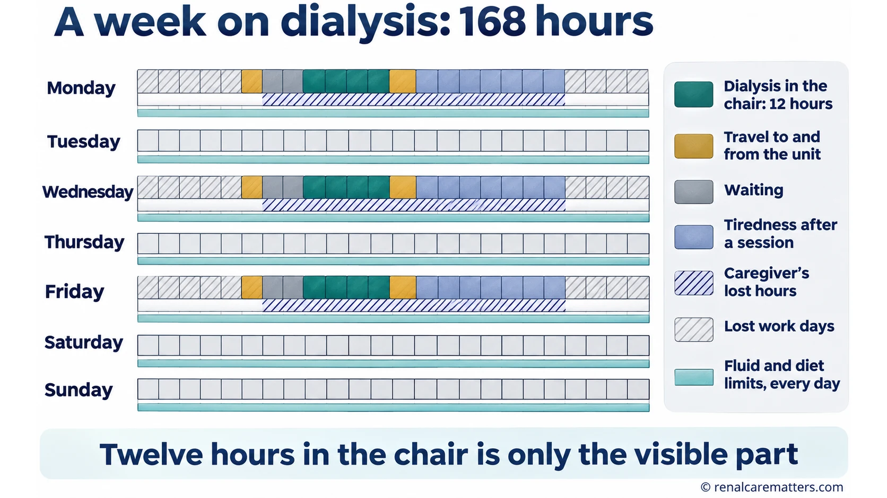
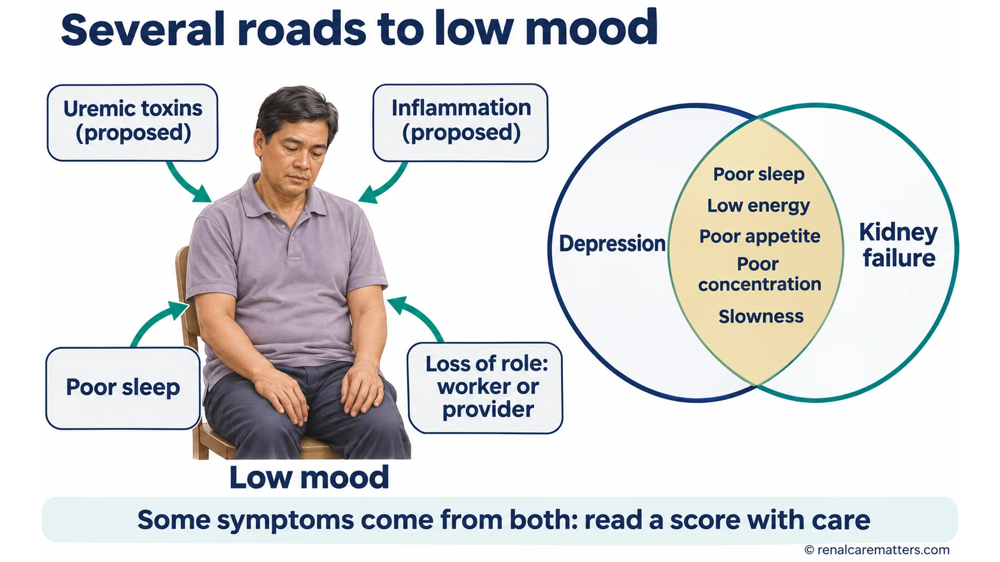
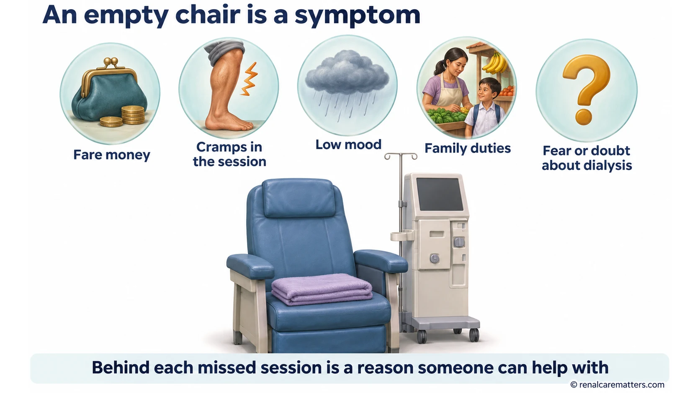
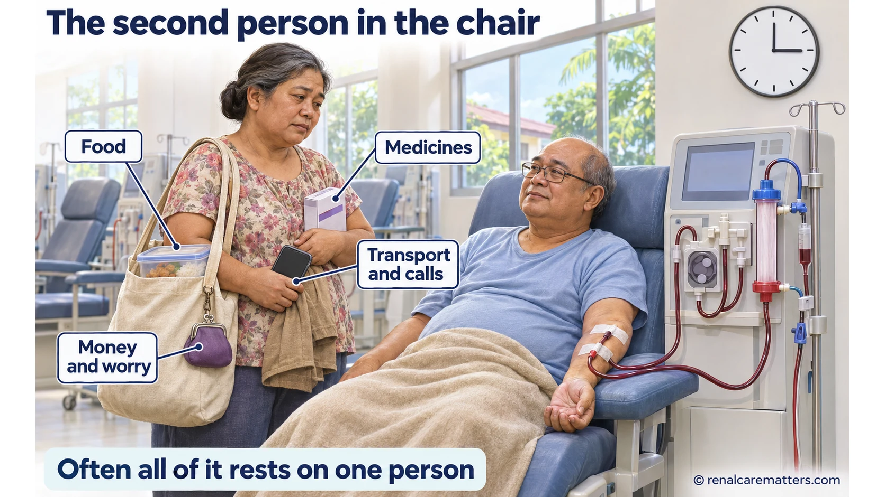
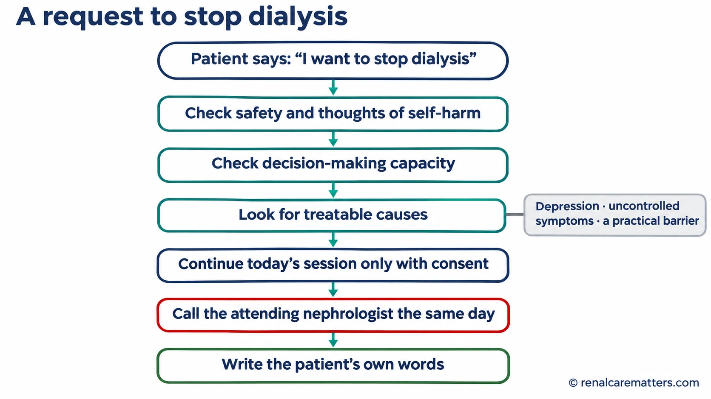

The Person in the Chair: Mood, Burden, and Choices About Care
Depression, missed sessions, caregiver strain, and how to respond when a patient wants to stop dialysis.
PublishedNailathalaGipatikPepalwal:ReferencesMga SanggunianMga TinubdanReng Reperensya:17Audience: Physicians who cover hemodialysis shifts · attending nephrologists, medical directors, and head nurses who orient themRead timeOras ng pagbasaOras sa pagbasaOras ning pamamasa:
This module is study material for physicians on duty in hemodialysis units. It explains the reasoning behind common decisions; it is not a protocol. At the chairside, follow your unit’s protocol and ask the attending nephrologist for guidance. Doses and cut-off values are set by your unit. Every case is fictional.
Learning objectives
After this module you should be able to
Screen a patient in the chair for depression in two steps, two brief questions and then the Patient Health Questionnaire-9 (PHQ-9), and interpret the score in light of dialysis symptoms.
Explore the reasons for a missed or shortened session with open questions before giving advice, and record the barriers.
Recognize caregiver strain and money and transport barriers, and route each to its owner per your unit’s protocol.
Respond to a request to stop dialysis: check safety and decision-making capacity, separate a treatable cause from a settled choice, and escalate the same day.
Prepare and support a goals-of-care conversation led by the attending nephrologist, using words that help and avoiding words that harm.
Respond to a death in the unit: the first steps, support for the family, the record, and care of the team.
Pre-testBefore you read, answer the 8 self-assessment questions and note your score. After the module, select New set of questions and compare. The difference is what you learned; the questions you still miss are what to reread.
Start here
The big picture, in plain words
In plain wordsThink of a jeepney that runs the same route every day. The engine can be tuned perfectly, but the trip still fails if the driver is exhausted, the fare box is empty, or the family at home needs him elsewhere. Dialysis is the same. A perfect prescription helps only a person who can and wants to come back to the chair.
The picture has a limit. A jeepney driver’s tiredness is separate from the engine. In kidney failure the two are tangled. Uremic toxins, inflammation, anemia, and poor sleep are thought to act on the brain, so the body’s illness may itself lower mood and drive. Low mood then makes it harder to keep the schedule, the diet, and the fluid limits, and the body suffers in turn.
Figure 1 · Key terms for this module
DepressionPersistent low mood or loss of interest, with changes in sleep, appetite, energy, or thinking, for at least two weeks.
Patient Health Questionnaire-9 (PHQ-9)Nine items on the past two weeks, each scored 0 to 3, total 0 to 27.
Item 9The PHQ-9 question about thoughts of being better off dead or of self-harm. Any positive answer starts the safety pathway.
Decision-making capacityThe ability to understand, appreciate, reason about, and communicate a choice.
Withdrawal from dialysisA decision to stop dialysis, made by the patient with the attending nephrologist and, usually, the family.
Goals of careWhat matters most to the patient, and the plan that fits it.
Caregiver burdenThe physical, emotional, social, and financial strain on the family member who looks after the patient.
Most patients in the chair cope, often with great courage. Some carry depression that nobody has named. A few will say, quietly, that they want to stop. Your work is to notice, ask, keep the patient safe today, and bring in the right people: the attending nephrologist, the social worker, and the unit’s mental health referral pathway.
Opening case · fictional
Case: “I am tired of this”
Mang Romeo Dizon, 58, was a jeepney driver until four years ago. He now dialyzes three times a week through a left arm fistula. He arrives at 1:30 in the afternoon for his Wednesday session. He missed Monday.
Nurse Liza Manalo reports at the station. His pre-dialysis weight is 4.1 kilograms above his dry weight. His blood pressure is 168/94 mm Hg, pulse 92, and oxygen saturation 96% on room air. A point-of-care potassium is 6.1 mmol/L, and the rhythm strip she ran shows no changes from potassium. These are illustrative values, not targets. She called the attending nephrologist about the potassium, cannulated the fistula, and started the session on the standing order.
At hour one he tells her, “I am tired of this. I want to stop dialysis. My wife has to stop selling at the market to bring me here.” He adds that he has not slept well in weeks. Ms. Manalo asks you to come to the chair. His wife, Aling Nena, is sitting in the waiting area.
Before reading on, decide:
Is Mang Romeo safe right now, and what single question must you ask before anything else?
What could be driving this request that might be treatable, and how will you find out?
Whom do you call, what do you say in Situation, Background, Assessment, Recommendation (SBAR) form, and what exactly do you write in the chart?
Keep your answers in mind. The lesson gives you what you need, and the case review near the end shows one sound response.
Lesson · part 1
A week in the life: what dialysis asks of a person
Figure 2. A week has 168 hours. Three four-hour sessions cover about 12 of them, which is why every prescribed minute matters.
Twelve hours of treatment is the visible part. Add the ride, the waiting, the tiredness after each session, the fluid and diet limits, the lost work, and the hours a spouse or child gives up. The real load is much larger than the prescription.

Figure 3. Twelve hours in the chair is only the visible part of the week. Travel, waiting, tiredness after a session, diet and fluid limits, and the caregiver’s lost hours make up the rest of the load.
How mood falls: a causal chain
Mood depends on the brain, the body, and the person’s place in the world. Kidney failure presses on all three. Uremic toxins and chronic inflammation may blunt energy and interest; this is plausible but not proven in patients. Anemia and poor sleep add fatigue, and itch and cramps (Module 24) break sleep further.
The social chain is often heavier. A man who fed his family may now depend on his wife for the fare. Loss of role, income, and control are classic triggers of depression in chronic illness. On dialysis they arrive together.

Figure 4. Several roads lead to low mood on dialysis. Some depression symptoms, such as poor sleep, low energy, and poor appetite, can also come from kidney failure itself, so a symptom score must be read with care.
Here is the trap. Depression and uremia share fatigue, poor appetite, poor sleep, and slow thinking. An underdialyzed patient can look depressed, and a depressed patient can look underdialyzed. Neither label should erase the other.
Symptom
Points toward depression
Points toward the body
Fatigue
Present on good days too, with loss of interest
Worse after sessions, with anemia or missed sessions
Poor appetite
With low mood and no pleasure in food
With nausea, metallic taste, or a low delivered dose
Poor sleep
Early waking with worry or sadness
Itch, cramps, restless legs, or breathlessness lying flat
Hopelessness and guilt
Strongly suggests depression
Not explained by uremia
How common, and how serious
Palmer and colleagues pooled 249 study populations with 55,982 participants. By clinical interview, depression affected 22.8% of patients on dialysis; by rating scales, 39.3%. The authors concluded that scales may overestimate depression in dialysis.1 Both figures come from observational studies of varying quality.
Kurella and colleagues studied all patients who started dialysis in the United States from 1995 to 2000. The crude suicide rate was 24.2 per 100,000 patient-years, 1.84 times the general-population rate after standardization. Age 75 or older, male sex, alcohol or drug dependence, and a recent hospital stay for mental illness were independent predictors.2 Suicide remained rare in absolute terms. These registry data are older and from one country; they cannot tell you who in your unit is at risk, which is why you ask every patient directly.
RememberDepression is common, under-named, and partly hidden behind uremic symptoms. Ask about mood the way you ask about breathlessness.
Lesson · part 2
Screening for depression at the chair
Screening works like two fishing nets. The first is wide and quick: the first two PHQ-9 items. Over the last two weeks, how often have you been bothered by little interest or pleasure in doing things? How often have you felt down, depressed, or hopeless? The second, finer net is the full PHQ-9 for anyone the first net catches.
Figure 5 · The two-step screen at the chair
Set the sceneSit at eye level. Lower your voice. Ask the nurse to draw the curtain if your unit has one. Use Filipino or English, as the patient prefers.
Ask the two questionsLow mood and loss of interest over the past two weeks. If both answers are “not at all,” record a negative screen and the date.
Complete the PHQ-9If either answer is positive, complete all nine items with the patient, or review the form the patient filled in.
Ask item 9 in personAsk about thoughts of being better off dead or of hurting oneself, in plain words, whatever the total score.
Branch on item 9Any positive answer starts the safety pathway now. A negative answer with a high total goes to the attending nephrologist with a referral request.
RecordScore, date, item 9 answer, the patient’s own words, and who was told.
How well the PHQ-9 works in dialysis
The PHQ-9 was first validated in 6,000 primary care and obstetric patients: a score of 10 or more had sensitivity and specificity of 88% for major depression, and scores of 5, 10, 15, and 20 marked mild, moderate, moderately severe, and severe depression.3
Watnick and colleagues tested it in 62 patients on dialysis against a structured psychiatric interview. At 10 or more, sensitivity was 92%, specificity 92%, positive predictive value 71%, and negative predictive value 98%.4 The study was small and single-center. A negative screen is reassuring. A positive screen means “look closer”: about three in ten positives did not have depression on interview.
PHQ-9 total
Severity band
Dialysis caveat
What you do
0 to 4
Minimal
None
Record. Rescreen at the interval your unit sets
5 to 9
Mild
Sleep, energy, and appetite items may come from uremia
Record. Tell the attending nephrologist at the next review
10 to 14
Moderate
Look at items 1, 2, 6, and 9, which uremia does not explain
Report to the attending nephrologist and request a referral per protocol
15 to 27
Moderately severe to severe
Do not explain the score away
Report the same day
Item 9 above 0, any total
Safety concern
None. Uremia never explains this item
Start the safety pathway now
The bands come from primary care.3 The dialysis caveat is reasoning from shared symptoms, not a tested correction. The PHQ-9 calculator adds the items, and the patient-reported outcome tool tracks scores over time.
Worked example, illustrative. PHQ-9 total = sum of nine items, each scored 0 to 3.3 Item scores: interest 2, low mood 2, sleep 3, energy 3, appetite 2, feeling a failure 2, concentration 1, slowness 1, item 9 0. Total = 2 + 2 + 3 + 3 + 2 + 2 + 1 + 1 + 0 = 16. This is above the dialysis-validated cutoff of 10.4 Sleep, energy, and appetite (7 of the 16 points) overlap uremic symptoms. Interest, low mood, and feeling a failure (6 points) do not. What the number tells you: depression is likely enough to report and refer. What it does not tell you: the diagnosis, the cause, or the treatment. Item 9 is 0, so no safety pathway, but the score goes to the attending nephrologist today with a referral request.
The Medical Director sets the screening interval, the form, and who scores it. No trial has tested whether routine screening in dialysis improves outcomes, but it is the only way to find depression that patients do not mention.
Stop and callStop and call when a patient answers item 9 above zero, states a plan to harm himself, or wants to leave mid-session to harm himself. Stay with the patient or keep a staff member beside him, and speak calmly and without judgment. Keep the access and lines in view. Follow your unit’s safety protocol: call the attending nephrologist and the patient’s emergency contact, and activate the unit’s mental health referral pathway or the crisis line your Medical Director lists. Do not send the patient home alone.
Lesson · part 3
What helps: the evidence on treating depression in dialysis
Picture two doors: talking therapy and medicine. Both are open. Neither is a sure cure, and the evidence behind each is thinner than in people without kidney failure.
Two features of dialysis explain why. Some antidepressants or their breakdown products accumulate when the kidneys fail, and most are poorly removed by dialysis, so levels and side effects can differ (Module 20). And because of the somatic overlap above, a trial that measures symptom scores partly measures uremia.
Figure 6 · What each study tested and found
Antidepressant versus placebo, Cochrane reviewFour small randomized trials, 170 participants, 8 to 12 weeks. No quality-of-life benefit shown; more nausea with the drug (risk ratio 2.67). One trial of 43 patients found lower depression scores. Certainty very low or ungradeable.5
Sertraline versus placebo, feasibility trial30 randomized, 6 months. Eight of 15 on sertraline and 13 of 15 on placebo completed. Both groups improved, with no difference. Too small to conclude.6
Sertraline versus chairside talking therapy, ASCEND120 patients, 41 United States units, 12 weeks, open label. Clinician-rated scores 1.84 points lower with sertraline, with more adverse events. No placebo arm.7
Chairside talking therapy versus wait-listRandomized crossover, 65 enrolled. Among those depressed at baseline, 89% were no longer depressed after therapy, against 38% on the wait-list. Quality of life and weight gain between sessions improved.8
Stepped collaborative care by telehealth, TĀCcare160 patients; talking therapy, medicine, or both. Fatigue and pain improved modestly, lasting to 6 months; the depression score fell slightly.9
Reading these results
Cognitive behavioral therapy (CBT) is a structured talking therapy that helps a person notice and change unhelpful thoughts and habits. The evidence suggests benefit at the chair, but the main trial enrolled 65 patients at two centers.8 Whether antidepressants beat placebo in dialysis is uncertain; the placebo-controlled trials are few and tiny.5,6 ASCEND shows sertraline did modestly better than chairside CBT, and cannot say whether either beats no treatment.7
All of these outcomes are rating-scale scores, surrogates for how a person feels and functions. None of these trials was designed to show an effect on survival, hospital stays, or suicide. In ASCEND, a structured engagement interview did not raise treatment uptake (66% against 64%).7 Patients decide for their own reasons. Your role is to make the offer, record the answer, and keep the door open.
Task
Who owns it
Screening, scoring, and recording
The physician on duty or the staff member your protocol names
Asking the patient’s preference: talking, medicine, both, or neither for now
The physician on duty, recorded in the patient’s words
Referral to psychiatry, psychology, or counseling
Per your unit’s referral pathway, with the attending nephrologist
Choosing and dosing any antidepressant
The attending nephrologist, with the psychiatrist where available
Do not start an antidepressant on the floor, and do not stop one the patient already takes. Sudden stopping of some antidepressants causes withdrawal symptoms. Report the screen, the preference, and any side effects the patient describes.
RememberTreatment helps some patients, but the evidence is thin. Your job is to find, record, and refer, not to prescribe.
Lesson · part 4
Missed and shortened sessions: ask before you lecture
An empty chair is a symptom, not a character flaw. Module 11 decides whether it is safe to dialyze after a missed session. This section asks why it was missed.
The physiology is unforgiving. Every missed session stretches the gap between treatments (Module 2), and potassium, fluid, and acid keep building. The risk is highest in the days right after a missed treatment.
What the cohorts show
In the Dialysis Outcomes and Practice Patterns Study (DOPPS), skipping one or more sessions a month was associated with higher mortality (relative risk 1.30) and hospital admission (relative risk 1.13). Shortening meant ending a session more than 10 minutes early. A higher share of highly trained staff hours was associated with lower odds of skipping (odds ratio 0.84 per 10%).10
A later DOPPS analysis of 8,501 patients in 20 countries found a four-month missed-treatment risk from under 1% in Italy and Japan to 24% in the United States. Younger age, less time on dialysis, longer travel, and more depressive symptoms predicted missing. Missed treatments were associated with higher all-cause mortality (hazard ratio 1.68).11
In 182,536 United States patients, the average missed rate was 7.1 sessions per patient-year. In the two days after a miss, the odds of hospital admission were about four times higher (odds ratio 3.98). Transport, weather, holidays, psychiatric illness, pain, and stomach upset were linked to missed days.12
All three are observational. Patients who skip differ in many ways, so part of the association with death may reflect those differences. Most data come from high-income countries; no Philippine data were found. The wide variation between countries suggests that missed sessions can be changed.

Figure 7. An empty chair is a symptom. Behind each missed session is a reason that someone in the unit can usually help with.
Figure 8 · Missed sessions: ask before you lecture
Open question“I noticed you were not here on Monday. What happened?” Then wait. Silence gives the patient room.
Sort the barrierTransport or fare money. Symptoms during the session such as cramps or a falling pressure. Low mood. Family duties. Work. Doubt about whether dialysis is needed.
Match an ownerSocial worker for money and transport. Head nurse for schedule and chair time. Attending nephrologist for symptoms, fluid goals, and mood.
RecordThe barrier in the patient’s words, the owner, and the date of follow-up.
Follow upAsk at the next session whether anything changed.
Delivered-time check, illustrative. Percent delivered = delivered minutes ÷ prescribed minutes × 100. Prescribed: 240 minutes × 13 sessions = 3,120 minutes. Delivered: 2 sessions missed (0 minutes), 4 sessions ended at 200 minutes, 7 sessions ran 240 minutes. Delivered = (7 × 240) + (4 × 200) = 1,680 + 800 = 2,480 minutes. Percent delivered = 2,480 ÷ 3,120 × 100 = 79.5%. Shortened sessions by the DOPPS definition, more than 10 minutes short: 4.10 What the number tells you: about one fifth of the prescribed time was not delivered this month. What it does not tell you: why. Record the reason for each missed or shortened session, including sessions ended early for medical reasons.
Write the numbers, not a label. “Missed 2 of 13 sessions; 4 ended 40 minutes early because of cramps” helps the next reader. “Noncompliant” helps nobody and follows the patient for years. The session review tool shows delivered time and events when a patient signs off early.
A barrier sort in practice
A man has missed two Mondays. Your open question finds two reasons: no fare money after the weekend, and painful cramps in his last hour. The fare goes to the social worker. The cramps and the fluid goal go to the attending nephrologist, because they belong to the prescription (Module 24). The Monday schedule goes to the head nurse. You record each owner and the follow-up date.
RememberAsk why before you warn. A barrier you name can be fixed; a lecture changes nothing.
Lesson · part 5
The person beside the chair: caregivers and money
The caregiver is often the second patient in the room. In many Filipino families one person, usually a spouse or daughter, brings the patient three times a week, cooks the low-salt food, buys the medicines, and finds the fare, often after giving up work.

Figure 9. The caregiver is often the second person in the chair: transport, food, medicines, money, and worry often rest on one person.
Each session takes most of a day for two people. Lost income meets new costs: transport, medicines, and laboratory tests. Money worry and fatigue wear down the caregiver’s health and patience. A worn-out caregiver may stop bringing the patient, and the patient may come to feel like a burden. When a patient says he is a burden, take it as a reason to screen, including item 9.
Walavalkar and colleagues reviewed six studies of caregivers of patients on conservative kidney care, without dialysis. These caregivers carried significant burden, with effects on quality of life similar to those of dialysis caregivers, and fear of the patient dying ran through their accounts.13 The review was small and could not pool its data.
Can the burden be eased? Gillespie and colleagues found 13 intervention studies, mostly education and skills training. Twelve reported less burden, and a meta-analysis of five education programs showed a reduction, with high heterogeneity and low certainty.14 Teaching caregivers suggests benefit; which program works best is unknown.
Figure 10 · One question, three owners
Ask the caregiver“How are you managing with all of this?” Ask it away from the patient if the caregiver seems to hold back.
Money and transportThe social worker, or the staff member your unit names, for financial counseling and available assistance.
ScheduleThe head nurse, for a shift or chair time that fits work or market hours.
Exhaustion, low mood, or conflictThe attending nephrologist and the unit’s referral pathway. A caregiver can be screened and referred too.
Do not quote coverage rules or amounts from memory; they change, and a wrong promise damages trust. The guide on financial stress in kidney disease is a starting point, and the social worker holds the current details.
RememberNotice the caregiver, ask one question, and route the answer. A supported caregiver keeps the patient in the chair.
Lesson · part 6
“I want to stop dialysis”
A request to stop dialysis is the start of a conversation, not the end of one. It may be a settled choice after years of thought, or the voice of untreated depression, uncontrolled itch, or an empty fare purse. On the day you hear it, you cannot know which, and you do not need to. You need to keep the patient safe, listen well, and bring in the attending nephrologist the same day.
Why this is a valid choice, and why it needs care
The Kidney Disease: Improving Global Outcomes (KDIGO) Controversies Conference on supportive care placed symptom control, advance care planning, conservative care, and end-of-life care inside good kidney care, including for people on dialysis.15 This is a conference statement, not a graded recommendation.
Stopping dialysis leads to death, usually soon. In 1,947 patients admitted to 10 United States hospices after stopping dialysis, mean survival was 7.4 days (range 0 to 40). Male sex, hospital referral, lower function, and edema were associated with shorter survival.16 These figures describe a hospice group in one country, not the future of the patient in front of you.
Four questions, in order
Question
What you check
What you do with the answer
Is the patient safe right now?
Item 9 of the PHQ-9. Any plan or wish to harm himself. Wanting to leave the unit to do so
Any yes starts the safety pathway. The request to stop is recorded and is not acted on today
Can the patient decide?
Understands the facts. Appreciates that they apply to him. Reasons about the options. States a steady choice
Record what you found. A formal capacity assessment belongs to the attending nephrologist or psychiatrist
Is there a treatable driver?
Depression. Uncontrolled itch, pain, cramps, or poor sleep (Module 24). Money, transport, or family conflict. Confusion from illness
Name each driver and its owner. A fixed barrier can change the decision
Who decides?
The patient, with the attending nephrologist and, if the patient wishes, the family
Not you, today, at the chair
Capacity is specific to one decision at one time. A patient with mild memory problems may still decide about dialysis; one who is newly confused, intoxicated, or very ill may not, even if he spoke clearly last week (Module 25).

Figure 11. A request to stop dialysis opens a conversation. Safety comes first, then capacity and treatable causes, then a same-day call to the attending nephrologist.
Today’s session
Ask whether the patient will finish today’s session while the conversation continues. Many will, once they feel heard. A patient with capacity who declines cannot be dialyzed against his will. Explain the risks in plain words, ask the nurse to end the session per protocol, and call the attending nephrologist before he leaves (Module 11 covers the gap). If he seems confused or unwell, call at once and do not let him leave alone.
Write the patient’s exact words in quotation marks: “I am tired of this; I want to stop” says more than “patient requests withdrawal.” Withdrawal orders, do-not-resuscitate orders, and consent forms are covered in Module 31.
Stop and callStop and call the attending nephrologist the same day for any request to stop dialysis, for any refusal of today’s session by a patient who seems confused, intoxicated, or medically unstable, and for any family request to stop that the patient has not voiced himself. If the patient also has thoughts of self-harm, start the safety pathway first and call while a staff member stays with him.
When the request comes from the family
Sometimes a relative says, “Doc, let us stop. He is suffering.” Thank the relative and listen. Then ask to hear from the patient, alone if possible. The patient’s voice leads while he can decide. Record both voices and call the attending nephrologist.
Figure 12 · Call card: a patient at risk of self-harm during dialysis
RecognizeItem 9 above zero, talk of being better off dead, a stated plan, sudden calm after deep distress, or a patient trying to leave mid-session to harm himself.
First 2 minutesStay with the patient or assign a staff member to stay. Speak calmly and listen. Keep the access and lines in view. Call for help in the unit per protocol.
Stop dialysis?Continue if the patient is calm and consents. End the session per protocol if the patient insists on stopping or cannot be kept safe in the chair.
Return the blood?Yes, through the usual return, when the session ends and the circuit is closed and intact. Do NOT return blood from a circuit that has been opened, disconnected, or contaminated, or that has clotted. If a needle is pulled or a line is opened, stop the blood pump, clamp, and press on the site.
CallThe attending nephrologist, the patient’s emergency contact, and the unit’s mental health referral pathway, emergency room, or crisis line, as your protocol lists. Use the SBAR format from Module 1.
WriteTime, the patient’s words in quotation marks, the item 9 answer, who stayed with the patient, whom you called and when, the advice received, and where and with whom the patient went.
Lesson · part 7
Goals-of-care conversations and a death in the unit
Think of a map with three roads. The attending nephrologist walks them with the patient and family. You often stand at the crossroads first, because the patient speaks to whoever is at the chair.
Figure 13 · Three roads
Continue as isThe patient values the time dialysis gives and accepts its load. Goals are reviewed at intervals.
Change the planSymptom relief, fewer restrictions, or a different schedule, decided by the attending nephrologist (Module 27).
Stop with comfort careThe patient, with the attending nephrologist and family, chooses to stop; symptom care and family support follow.
What the evidence says about planning ahead
Advance care planning is a series of conversations about what matters to the patient and who will speak for him if he cannot. The SPIRIT trial randomized 42 United States dialysis clinics, with 426 patient and surrogate pairs; trained nurses and social workers led structured planning talks. At two weeks, pairs agreed more often on end-of-life goals (odds ratio 1.61), and patients had less decisional conflict. Surrogate confidence did not differ. Among 77 bereaved surrogates, anxiety was lower, but depression and posttraumatic distress were similar.17
The trial supports planning talks led by trained unit staff. Its main outcomes were preparation scores at two weeks, not survival or place of death. Filipino families often decide together, so applying it here needs local judgment.
Figure 14 · Words that help and words that harm
“What matters most to you now?”Opens the conversation and puts the patient’s values first.
“Tell me more about being tired of this.”Invites the reason behind the request.
“Whatever you decide, we will keep caring for you.”Removes the fear of abandonment.
“I will ask Dr. ... to sit down with you and your family.”Names the next step and the person.
Avoid “There is nothing more we can do”There is always care to give, even when dialysis stops.
Avoid “You will die if you stop, so you cannot stop”True in part, but it ends the conversation and overrides the patient.
Avoid “Noncompliant” and “refuser”Labels that close minds and follow the patient in the chart.
RememberYou open the door to goals-of-care talk and document what was said; the attending nephrologist leads the decision.
A death in the unit
Some deaths in the unit are expected; others follow an arrest the team could not reverse. The resuscitation itself belongs to the unit’s protocol and other modules. This part covers what follows.
Figure 15 · After a death in the unit: the first 30 minutes
Confirm and recordPronounce death per your unit’s protocol and hospital rules. Record the time.
Protect privacyDraw the curtain or screen the chair. Move nearby patients if possible, or explain quietly what has happened, without names.
CallThe attending nephrologist and the Medical Director, per protocol. The head nurse arranges care of the body.
Inform the familyIn a private place, sitting down, in plain words. Say “died,” not “passed” or “lost.” Then stay and listen.
Write the death noteTime, events, the response, who was present, who was told, and when.
Care for the teamA short huddle before the next patient: what happened, how people are, and what needs follow-up.
Other patients have watched someone like them die. A brief, honest word at the chair helps more than silence. Staff grieve too, and a short debrief is part of safe practice.
On the floor
Real situations: problems and solutions
These are fictional but typical. For each one, cover the answer, decide what you would do, then compare. Where a step depends on local rules, your unit’s procedure and your supervisor’s direction come first.
The quiet goodbye
What you see
Aling Cora, 67, usually jokes with the nurses. Today she is quiet. As the session ends she thanks each nurse by name and says, “Salamat sa lahat. You will not have to worry about me anymore.”
What is likely going on
Thanking everyone as if for the last time can be a warning sign of suicidal thinking, even without a direct statement.
What to do
Sit with her before she leaves. Ask plainly whether she has thoughts of being better off dead or of hurting herself. If she says yes or will not answer, stay with her, follow the safety protocol, and call the attending nephrologist and her emergency contact. Do not let her go home alone.
Why it matters
A direct, caring question gives the patient permission to speak. Waiting for her to raise it may mean the moment passes.
The score that is mostly sleep
What you see
Mr. Danilo Reyes, 49, scores 11 on the PHQ-9. Most points come from sleep, energy, and appetite. He scratches his legs throughout the conversation.
What is likely going on
Itch and poor sleep may be driving the score. Depression is still possible and is not excluded.
What to do
Record the score and item 9. Report both the score and the itch to the attending nephrologist, and mention that the itch may be breaking his sleep. Module 24 covers itch.
Why it matters
Treating the body may lift part of the score. Reading the items, not only the total, guides the right referral.
Always forty minutes short
What you see
Mrs. Elena Santos signs off 40 minutes early at almost every session. The run sheets say “patient requested.” Nobody has written why.
What is likely going on
A pattern of early sign-off has a reason: cramps, a falling pressure, a ride that leaves at a fixed time, or a child to fetch from school.
What to do
Ask her, with an open question, what makes the last part of the session hard. Record the reason, match it to its owner, and tell the attending nephrologist the delivered time as a number.
Why it matters
Each early end reduces delivered dialysis. The fix depends on the reason, and only the patient knows it.
The son who speaks for his mother
What you see
During rounds, the son of an alert 80-year-old woman tells you, “Doc, ihinto na natin. She is suffering.” His mother is listening but says nothing.
What is likely going on
The son may be voicing his own distress or a real family discussion. The mother’s own view is unknown.
What to do
Thank him and listen. Then ask to speak with his mother, alone if possible, about how she feels about dialysis. Record both voices and call the attending nephrologist the same day.
Why it matters
A family request that the patient has not voiced is a stop-and-call trigger. While she can decide, her voice leads.
A death at the next chair
What you see
A patient arrests at hour two and cannot be revived. The patient in the next chair, Mang Ben, has watched the resuscitation. Afterward he is pale and silent.
What is likely going on
Witnessing a death in the unit is frightening, especially for a patient who sees himself in the person who died.
What to do
After the immediate steps, go to Mang Ben. Tell him briefly and honestly what happened, without names or details. Ask how he is. Check his vital signs. Tell the attending nephrologist and the head nurse, and note it in his record.
Why it matters
Patients who witness a death may skip the next session or carry new fear. A few minutes of honest attention can prevent that.
Field notes
Sit down when you talk about mood. Standing over a patient in a chair closes the conversation.
Ask item 9 in your own plain words, out loud. A ticked box on a form is not the same as a question asked in person.
Write the patient’s exact words in quotation marks. The next physician will understand more from them than from any summary.
When a patient misses a session, write the number and the reason, never the label “noncompliant.”
Learn your unit’s mental health referral pathway, its emergency contact numbers, and the national crisis hotline your Medical Director lists before your first shift.
Case review
Back to the case: “I am tired of this”
Is Mang Romeo safe right now, and what must you ask first? You go to the chair, sit at eye level, and ask Ms. Manalo to draw the curtain. His pressure and potassium are already with the attending nephrologist, and his monitor shows a steady rhythm. The question that comes before everything else is about self-harm. You ask it plainly: “Sometimes when people feel this tired, they think they would be better off dead, or think of hurting themselves. Has that happened to you?” He says no, and that he wants to stop because he is a burden, not because he wants to die. You thank him and say he can tell any of the staff if such thoughts come. He understands where he is, what dialysis does, and what stopping means, and he agrees to finish today’s session.
What could be treatable? He describes weeks of waking early with worry. With his consent you complete the PHQ-9: 16, item 9 at 0, the pattern of the worked example. Interest, low mood, and feeling a failure, which uremia does not explain, give 6 points. He may have depression. His wife’s lost market income and the fare are a practical barrier and likely explain the missed Monday. His poor sleep may also have a physical cause, such as itch or breathlessness lying flat. You ask Aling Nena, separately, how she is managing. She cries and says she is exhausted.
Whom do you call, what do you say, and what do you write? You call the attending nephrologist during the session. Situation: “Mang Romeo Dizon, 58, said at hour one that he wants to stop dialysis.” Background: “He missed Monday; you know about today’s potassium of 6.1. Weeks of poor sleep. His wife stopped work to bring him.” Assessment: “No thoughts of self-harm. PHQ-9 16, item 9 zero. He understands his situation and agreed to finish today. Possible depression, a money and transport barrier, and caregiver strain.” Recommendation: “I suggest a review with you and the family this week, a mental health referral through our pathway, and a social worker referral today.” You repeat back the advice. In the chart you write the time, his words in quotation marks, the item 9 answer, the PHQ-9 score, his consent to continue, the barriers and owners, the call and advice, and the follow-up date. You do not write “noncompliant.”
Skills lab · with your preceptor
Skills checklist: Mood screen and response to a request to stop dialysis
Perform this at a practice station with a standardized patient in a dialysis chair while your preceptor observes. The patient will raise low mood and a wish to stop dialysis. Your preceptor rates each step as satisfactory, needs practice, or not observed. Steps marked Critical must all be satisfactory before sign-off. This checklist supports supervised learning; your unit’s own procedure and competency form are the authority. A printable version of every checklist is on the trainer page.
Introduces self, sits at eye level, and arranges privacy at the chair.
Asks the two screening questions in Filipino or English, as the patient prefers.
Administers or reviews the PHQ-9 and computes the total correctly.
CriticalAsks item 9 directly and starts the safety pathway for any positive answer.
Identifies which positive items may reflect uremic symptoms, without dismissing them.
Asks open questions about missed or shortened sessions before giving advice.
Names at least one barrier and its owner: social worker, head nurse, or attending nephrologist.
CriticalOn a request to stop dialysis, checks immediate safety and does not leave a patient with self-harm risk alone.
Assesses decision-making capacity in outline: understands, appreciates, reasons, and states a choice.
CriticalCalls the attending nephrologist the same day with an SBAR report and records the patient’s words verbatim.
Uses at least two phrases that help and avoids “there is nothing more we can do.”
Documents the score, the date, the actions, the calls, and the follow-up plan.
Placement activity. Over two weeks, with your preceptor, review the mood screens recorded in your unit. Pick one patient with a positive screen and one patient who has missed two or more sessions. For each, check that a barrier, an owner, and a follow-up date are recorded, and report any gap to the attending nephrologist.
Self-assessment
Check your understanding
Each visit draws 8 questions at random from this module’s 15-question bank. Choose the single best answer for each, then select Check answers; an explanation appears under the best answer. Select New set of questions for a different mix. A good target is 7 of 8 on two different sets. Nothing you select is sent anywhere; scoring happens in your browser.
Go deeper
Read next on this site
CKD, Mental Health & SleepMood, anxiety, and sleep in kidney disease, written for patients and families.
Palmer, S., Vecchio, M., Craig, J. C., Tonelli, M., Johnson, D. W., Nicolucci, A., Pellegrini, F., Saglimbene, V., Logroscino, G., Fishbane, S., & Strippoli, G. F. M. (2013). Prevalence of depression in chronic kidney disease: Systematic review and meta-analysis of observational studies. Kidney International, 84(1), 179–191. https://doi.org/10.1038/ki.2013.77
Kurella, M., Kimmel, P. L., Young, B. S., & Chertow, G. M. (2005). Suicide in the United States end-stage renal disease program. Journal of the American Society of Nephrology, 16(3), 774–781. https://doi.org/10.1681/ASN.2004070550
Kroenke, K., Spitzer, R. L., & Williams, J. B. (2001). The PHQ-9: Validity of a brief depression severity measure. Journal of General Internal Medicine, 16(9), 606–613. https://doi.org/10.1046/j.1525-1497.2001.016009606.x
Watnick, S., Wang, P.-L., Demadura, T., & Ganzini, L. (2005). Validation of 2 depression screening tools in dialysis patients. American Journal of Kidney Diseases, 46(5), 919–924. https://doi.org/10.1053/j.ajkd.2005.08.006
Palmer, S. C., Natale, P., Ruospo, M., Saglimbene, V. M., Rabindranath, K. S., Craig, J. C., & Strippoli, G. F. M. (2016). Antidepressants for treating depression in adults with end-stage kidney disease treated with dialysis. Cochrane Database of Systematic Reviews, 2016(5), Article CD004541. https://doi.org/10.1002/14651858.CD004541.pub3
Friedli, K., Guirguis, A., Almond, M., Day, C., Chilcot, J., Da Silva-Gane, M., Davenport, A., Fineberg, N. A., Spencer, B., Wellsted, D., & Farrington, K. (2017). Sertraline versus placebo in patients with major depressive disorder undergoing hemodialysis: A randomized, controlled feasibility trial. Clinical Journal of the American Society of Nephrology, 12(2), 280–286. https://doi.org/10.2215/CJN.02120216
Mehrotra, R., Cukor, D., Unruh, M., Rue, T., Heagerty, P., Cohen, S. D., Dember, L. M., Diaz-Linhart, Y., Dubovsky, A., Greene, T., Grote, N., Kutner, N., Trivedi, M. H., Quinn, D. K., Ver Halen, N., Weisbord, S. D., Young, B. A., Kimmel, P. L., & Hedayati, S. S. (2019). Comparative efficacy of therapies for treatment of depression for patients undergoing maintenance hemodialysis: A randomized clinical trial. Annals of Internal Medicine, 170(6), 369–379. https://doi.org/10.7326/M18-2229
Cukor, D., Ver Halen, N., Asher, D. R., Coplan, J. D., Weedon, J., Wyka, K. E., Saggi, S. J., & Kimmel, P. L. (2014). Psychosocial intervention improves depression, quality of life, and fluid adherence in hemodialysis. Journal of the American Society of Nephrology, 25(1), 196–206. https://doi.org/10.1681/ASN.2012111134
Jhamb, M., Steel, J. L., Yabes, J. G., Roumelioti, M.-E., Erickson, S., Devaraj, S. M., Vowles, K. E., Vodovotz, Y., Beach, S., Weisbord, S. D., Rollman, B. L., & Unruh, M. (2023). Effects of technology assisted stepped collaborative care intervention to improve symptoms in patients undergoing hemodialysis: The TĀCcare randomized clinical trial. JAMA Internal Medicine, 183(8), 795–805. https://doi.org/10.1001/jamainternmed.2023.2215
Saran, R., Bragg-Gresham, J. L., Rayner, H. C., Goodkin, D. A., Keen, M. L., Van Dijk, P. C., Kurokawa, K., Piera, L., Saito, A., Fukuhara, S., Young, E. W., Held, P. J., & Port, F. K. (2003). Nonadherence in hemodialysis: Associations with mortality, hospitalization, and practice patterns in the DOPPS. Kidney International, 64(1), 254–262. https://doi.org/10.1046/j.1523-1755.2003.00064.x
Al Salmi, I., Larkina, M., Wang, M., Subramanian, L., Morgenstern, H., Jacobson, S. H., Hakim, R., Tentori, F., Saran, R., Akiba, T., Tomilina, N. A., Port, F. K., Robinson, B. M., & Pisoni, R. L. (2018). Missed hemodialysis treatments: International variation, predictors, and outcomes in the Dialysis Outcomes and Practice Patterns Study (DOPPS). American Journal of Kidney Diseases, 72(5), 634–643. https://doi.org/10.1053/j.ajkd.2018.04.019
Chan, K. E., Thadhani, R. I., & Maddux, F. W. (2014). Adherence barriers to chronic dialysis in the United States. Journal of the American Society of Nephrology, 25(11), 2642–2648. https://doi.org/10.1681/ASN.2013111160
Walavalkar, A., Craswell, A., & Gray, N. A. (2022). Experiences of caregivers of patients with conservatively managed kidney failure: A mixed methods systematic review. Canadian Journal of Kidney Health and Disease, 9, Article 20543581221089080. https://doi.org/10.1177/20543581221089080
Gillespie, K. M., Purtell, L., Finderup, J., Schjerning, N., & Bonner, A. (2026). Interventions to reduce burden among informal caregivers of people with chronic kidney disease: Systematic review and meta-analysis. Journal of Renal Care, 52(2), Article e70063. https://doi.org/10.1111/jorc.70063
Davison, S. N., Levin, A., Moss, A. H., Jha, V., Brown, E. A., Brennan, F., Murtagh, F. E. M., Naicker, S., Germain, M. J., O’Donoghue, D. J., Morton, R. L., Obrador, G. T., & Kidney Disease: Improving Global Outcomes. (2015). Executive summary of the KDIGO Controversies Conference on Supportive Care in Chronic Kidney Disease: Developing a roadmap to improving quality care. Kidney International, 88(3), 447–459. https://doi.org/10.1038/ki.2015.110
O’Connor, N. R., Dougherty, M., Harris, P. S., & Casarett, D. J. (2013). Survival after dialysis discontinuation and hospice enrollment for ESRD. Clinical Journal of the American Society of Nephrology, 8(12), 2117–2122. https://doi.org/10.2215/CJN.04110413
Song, M.-K., Manatunga, A., Plantinga, L., Metzger, M., Kshirsagar, A. V., Lea, J., Abdel-Rahman, E. M., Jhamb, M., Wu, E., Englert, J., & Ward, S. E. (2024). Effectiveness of an advance care planning intervention in adults receiving dialysis and their families: A cluster randomized clinical trial. JAMA Network Open, 7(1), Article e2351511. https://doi.org/10.1001/jamanetworkopen.2023.51511
Educational study material for physicians. Does not replace the attending nephrologist’s orders, the unit’s protocols, required certification courses, or supervised practice.